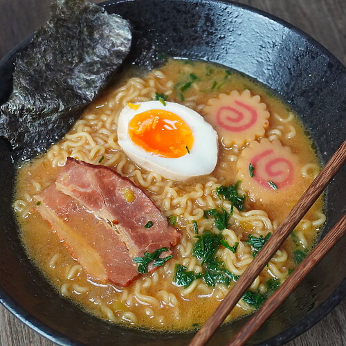

Ramen

Caldo japonés complejo con fideos y acompañamientos.

Caldo japonés complejo con fideos y acompañamientos.

Masa fina cocinada a altas temperaturas en horno de leña.
Escribe hasta 3 platos.
Escribe una nota del 1 al 10.